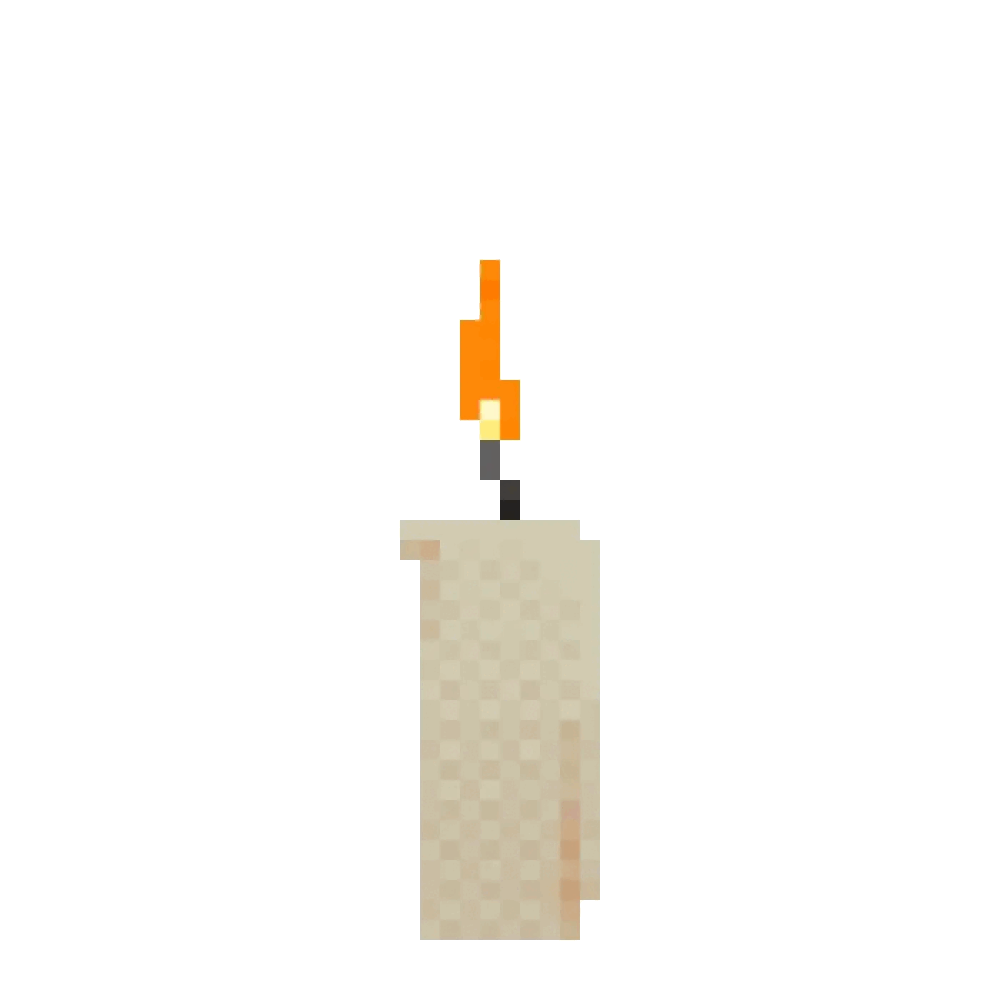

Este curso es un viaje iniciático en el arte de la magia del caos, creado por y para el grupo de magos del caos de magia caótica. "In principio erat verbum" - En el principio era la palabra.
🔮 🧙♂️ APRENDE Como TRANSFORMARTE en un MAGO del CAOS 🧙🏻♀️🦉
Ver video sobre conceptos básicos
Términos básicos en la magia del caos
Ver video sobre términos básicos
PODCAST CAÓTICO EP XXXI: Como convertirte en un MAGO del CAOS: una guía Práctica!
Escuchar podcast sobre cómo ser mago del caos
PODCAST CAÓTICO EP I: 🔮 SERVIDORES MÁGICOS! Descubre el Secreto Oculto de la MAGIA DEL CAOS 🌀
Escuchar podcast sobre servidores mágicos
PODCAST CAÓTICO EP XXII:👾 FAQ: 20 Preguntas Sobre SERVIDORES MÁGICOS en la MAGIA DEL CAOS 👥
Escuchar podcast sobre preguntas frecuentes de servidores mágicos
PODCAST CAÓTICO EP VIII: El SECRETO OCULTO de los SERVIDORES MÁGICOS y los EGREGORES 🧙♂️💥
Escuchar podcast sobre el secreto de los servidores y egregores
PODCAST CAÓTICO EP XXXII: Cómo Conjurar un SER o un EGREGOR en la MAGIA DEL CAOS 👁️
Escuchar podcast sobre conjuración de seres y egregores
¿Listo para desatar tu magia caótica? ¡Únete a nuestro canal y recibe más contenido exclusivo!